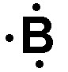
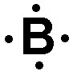

Press Ctrl-Z to toggle the answers.
asdf
asdf
May 19, 2023
name: ______________________________________
1) An element has three stable isotopes with masses of 27.731 amu, 29.838 amu, and 31.761 amu. The heavier two isotopes have an abundance of 15.5% (middle mass) and 2.96% (largest mass), respectively. What is the average atomic mass of the element?
A) 29.8 amu
B) 28.4 amu
C) 31.3 amu
D) 28.2 amu*
2) The atomic number (Z) is the number of ________ found in the nucleus of an atom.
A) Protons and neutrons
B) Electrons
C) Neutrons
D) Protons*
3) What element is defined by the following information?
p+ = 15 n° = 16 e- = 15
A) Phosphorous*
B) Sulfur
C) Sodium
D) Magnesium
4) Which of the following describe a compound?
A) where the composition is variable throughout
B) A substance composed of two or more elements in a fixed*
C) where the composition is constant throughout
D) definite proportion
5) A new compound was recently discovered and found to have an atomic weight of 353.80 amu. This element has two isotopes, the lighter of which has a mass of 345.81 amu and an abundance of 73.949%. What is the mass of the heavier isotope?
A) 376.48*
B) 343.00
C) 356.61
D) None of the above.
6) Which of the following statements about isotopes is true?
A) isotopes have the same mass
B) isotopes have different chemical properties
C) isotopes have the same mass number
D) isotopes have different mass numbers*
7) Which of the following describes a molecule?
A) two or more elements that are not covalently or ionically bonded and have a uniform composition
B) two or more elements or compounds that are not covalently or ionically bonded and do not have a uniform composition
C) two or more atoms covalently bonded together*
D) an individual unit of an element
8) How many atoms are present in 2.46 mg of Fe?
A) 3.77e-21x101 atoms
B) 0.265 atoms
C) 4.40x1018 atoms
D) 2.65x1019 atoms*
9) Which of the following is the elemental symbol for tungsten?
A) Ag
B) S
C) Tu
D) W*
10) In the following isotope symbol, the letters for the element have been replaced with an X. Determine the number of protons, neutrons and electrons?
\( ^{16}_{8}X^{3+} \)
A) protons: 8; neutrons: 8; electrons: 5*
B) protons: 8; neutrons: 16; electrons: 5
C) protons: 8; neutrons: 8; electrons: 11
D) protons: 5; neutrons: 8; electrons: 8
11) When a neutral atom loses an electron it becomes a(n) ____________, with a _____________ charge.
A) anion, negative
B) cation, positive*
C) anion, positive
D) cation, negative
12) In the following isotope symbol, the letters for the element have been replaced with an X. What is the name of the isotope?
\( ^{18}_{9}X \)
A) Fluorine-18*
B) Argon-18
C) Fluorine-9
D) Fluorine-9
13) An element has an atomic mass of 105.24 amu. The X-109 isotope (108.58 amu) is 33.59%. What is the mass, in amu, of the other isotope?
A) 103 amu
B) 103.55 amu*
C) 101.90 amu
D) 105 amu
14) Which of the following represents a hypothesis?
A) magnesium is a silvery color
B) If you increase temperature, then solubility of salt will increase*
C) Water is a good solvent
D) Air is transparent
15) Which of the following statements are true?
A) Protons and electrons have approximately the same mass (about 1 amu), whereas neutrons have almost no mass.
B) Electrons and neutrons have approximately the same mass (about 1 amu), whereas protons have almost no mass.
C) Protons and neutrons have approximately the same mass (about 1 amu), whereas electrons have almost no mass.*
D) None of the above.
16) Which of the following describes the characteristics of a gas
A) no definite volume or shape*
B) definite volume but no definite shape
C) definite volume and shape
D) no definite volume but a definite shape
17) Which ion is represented by the following information?
p+ = 12, e- = 14
A) Al2+
B) Mg2-*
C) Mg2+
D) Na2-
18) Which of the following mixtures will NOT be homogeneous?
A) sugar and coffee
B) vinegar and water
C) mud and water*
D) salt and water
19) Which of the following statements about subatomic particles are true.
A) positively charted ions (cations) have more electrons than protons
B) negatively charged ions have more protons than electrons
C) neutrons = mass number - protons*
D) mass number = protons + electrons
20) What mass (in mg) does 1.15 moles of carbon have?
A) 1.38x104 mg*
B) 13.8 mg
C) 6.78x104 mg
D) 95.8 mg
21) What is the charge, and approximate mass of protons, neutrons, and electrons?
A) protons: +1 charge & 1 amu; neutron: no charge & 1 amu; electron: -1 charge & 0 amu*
B) protons: no charge & 1 amu; neutron: -1 charge & 0 amu; electron: +1 charge & 1 amu
C) protons: +1 charge & 1 amu; neutron: -1 charge & 0 amu; electron: no charge & 1 amu
D) protons: -1 charge & 0 amu; neutron: no charge & 1 amu; electron: +1 charge & 1 amu
22) Calculate the mass (in g) of 4.29 × 1022 atoms of K.
A) 101 g
B) 0.0712 g
C) 2.79 g*
D) 0.359 g
23) Calculate the atomic mass of element "X," if it has 2 naturally occurring isotopes with the
following masses and natural abundances.
X-107 107.48735 amu 69.947%
X-108 108.04361 amu 30.053%
A) 107.65 amu*
B) 161.51 amu
C) 107.88 amu
D) 107.30 amu
24) The statement "if two elements form more than one compound the ratios of the masses of the second element that combine with a fixed mass of the first element will always be ratios of small whole numbers" belongs to:
A) the Law of Definite Proportions
B) the Law of Multiple Proportions*
C) the Law of Conservation of Mass
D) Dalton's Atomic Theory
25) How are gases different from solids and liquids?
A) Only gases take the shape of their container
B) Gas molecules have strong intermolecular bonds
C) Gases have the highest density
D) Gases fill the volume of their container*
26) What is the average atomic mass of I?
A) 74 amu
B) 127 amu
C) 126.90 amu*
D) 53 amu
27) What is the name of the Mg isotope that has 15 neutrons?
A) Magnesium-15
B) Magnesium-27*
C) Magnesium-24
D) Magnesium-12
28) How many moles of Mg are contained in 600. mg of Mg?
A) 24.7 mol
B) 0.0000405 mol
C) 14.6 mol
D) 0.0247 mol*
29) An unknown compound contains only carbon and hydrogen. When it undergoes combustion analysis, it produces 33.4 g of CO2 and 10.3 of H2O. What is the empirical formula for the compound?
A) C2H3*
B) C2H6
C) C2H5
D) C2H7
30) Which of the following would have the highest lattice energy?
A) Li2O
B) Na2O
C) Li2O
D) MgO*
31) What is the name of the compound with the formula Al2O3?
A) Aluminum oxide*
B) Dialuminum trioxide
C) Aluminum (III) oxide
D) Aluminum (II) oxide
32) Give the formula for phosphoric acid
A) H3PO3
B) HPO4
C) H3P
D) H3PO4*
33) Calculate the molar mass for Sn(ClO4)4.
A) 318 g/mol*
B) 222 g/mol
C) 218 g/mol
D) 436 g/mol
34) What is the empirical formula for CO2?
A) CO2*
B) CO
C) C2O4
D) C2O
35) Which of the following is the correct Lewis structure for B ?
A) *
B) 
C)

D)

36) Give the name for Fe2O3
A) Diiron trioxide
B) Iron (II) oxide
C) Iron oxide
D) Iron (III) oxide*
37) What is the empirical formula for a sulfur oxide (compound composed of sulfur and oxygen) that is 50.0% sulfur by mass?
A) SO3
B) S3O
C) SO2 *
D) S2O
38) Give the name for HI
A) Iodous acid
B) Iodic acid
C) Hydroiodic acid*
D) Hydroiodic acid
39) A triple covalent bond contains how many electrons?
A) 6*
B) 8
C) 3
D) 4
40) Determine the name for CoCl2
A) Cobolt (II) chloride heptahydrate
B) Cobolt chloride hexahydrate
C) Cobolt (II) chloride
D) Cobolt (II) chloride hexahydrate*
41) What is the formula for the compound magnesium hydroxide?
A) Mg(OH)2*
B) MgOH
C) Mg2OH
D) MgH2
42) Give the name for SF6.
A) Sulfur hexafluoride*
B) Sulfur heptafluoride
C) Sulfur (II) fluoride
D) Sulfur fluoride
43) Calculate the molar mass for C5H10.O.
A) 70.13 g/mol
B) 29.02 g/mol
C) 86.13 g/mol*
D) 77.06 g/mol
44) An ionic bond is best described as
A) A bond formed when electrons are shared between two atoms
B) A bond formed when electrons are transferred from one atom to another*
C) A bond between two metals
D) A bond between two non-metals
45) An unknown compound contains only carbon and hydrogen. When it undergoes combustion analysis, it produces 33.4 g of CO2 and 18.3 of H2O. Given that it has a molar mass of 44.1 g/mol, what is the molecular formula?
A) C3H10
B) C2H4
C) C3H8*
D) C3H6
46) Which of the following is the correct Lewis structure for S+ ?
A)

B)

C)

D)
 *
*